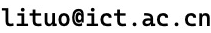

Tuo Li
Associate Professor
Institute of Computing Technology, Chinese Academy of Sciences

6 Kexueyuan South Road, Haidian, Beijing, 100190 China
About
I am an Associate Professor in the State Key Lab of Processors
(previously known as the State Key Lab of Computer Architecture),
at the
Institute of Computing Technology (ICT), CAS.
I received a PhD in Computer Science and Engineering
from the University of New South Wales (UNSW) in 2014,
under the supervision of
Prof. Sri Parameswaran.
Before joining ICT CAS, I was affiliated to
UNSW CSE
and
UNSW IFCYBER (Research Fellow),
where I worked as the Tech Lead and Secondary Investigator on
two trustworthy computer architecture projects, with DSTG Australia.
My publication records can be found at
DBLP and
Google Scholar.
My open-source activites (mostly about RISC-V) can be found at
GitHub.
We are hiring!
We are looking for postdoc, junior or early-stage researcher to join our team.
If you are interested in processor security research and want to work with us,
please contact.
We also have internship and exchange positions open for postgraduate students.
Research
My main research areas are computer architecture, computer security,
and fault tolerance.
My current research focus is innovating and building RISC-V platform for trustworthy and resilient computing.
We mainly work on XiangShan RISC-V processors.
My previous research works are summarized as follows.
- RISC-V ISA for memory safety: Memory safety is a notorious issue for C/C++ programming language, which lack the automatic memory management mechanisms. In recent years, statistics (see Microsoft's) from industry have shown that memory safety issues are key factors that threaten the system security. Based on the seminal work of SoftBound and lessons learnt from Intel MPX extension, we created RISC-V-based architectural solution, documented in [DAC2021] and [DAC2022a] for adding pointer-based memory safety architectural support into RISC-V ISA, which uses disjoint metadata structure (non-fat-pointer). The extended instruction set supports both spatial (out-of-bound errors) and temporal (use-after-free errors) memory safety corruptions, with moderate hardware overhead, while making significant improvement on the memory safety protection cost, in comparison to software-based approaches such as SoftBound and AddressSanitizer. This genre of approach, in comparison to Cambridge University's CHERI research, retrofits existing C/C++ codebase without rewriting the target software codebase and does not incur drastic hardware modifications, such as on-chip bus extension.
- Architectural support for microarchitectural timing channel mitigation: microarchitectural timing attacks, such as Meltdown and Spectre, have been identified as one of the major computer architecture challenges (see Hennessy and Patterson's Turing Lecture). Our reseach (see [DAC2022b] and [ArXiv2020]) created new ISA extension with micro-architectural enhancement, demonstrated on RISC-V rocket chip, which enables system to enforce strict timing channel isolation in between security domains. This genre of work supports "time protection" (see seL4's definition ) at operating system layer. Similar ISA extension (fence.t) has been adopted in the RISC-V security model specification.
- Dependable embedded processor: Soft errors (early observed in space in electronic equipment, and, at ground level, recored in the Cray-1 computers at Los Alamos) are essentially transient failures that do not permanently damage the processor and do not recur. Historically, soft errors have been primarily concerned with the design of high availability systems or systems that are deployed in environments that are hostile to electronics, such as outer space. As devices scale, the soft error rate for each individual device due to radiation is projected to remain approximately constant or expected to decrease. However, the exponential increase in the integration of the chip leads to correspondingly dramatic decreases in reliability (see research by Oracle). As a result, it was a consensus between industry and academia that system architecture must be reviewed for such a challenge (see the 2011 report from the ITRS and the perspective given by Intel and University of Michigan). Our goal is to find efficient architectural solutions for embedded processors (for instance Leon2 processor with SPARC ISA) to be soft-error-resilient, given that soft errors are inevitable. Our research (see [IEEE-TC2017], [DATE2016]) is a collaboration with CES KIT under DFG Priority Program SPP-1500.
Selected Publications
- Tuo Li, Sri Parameswaran: FaSe: Fast Selective Flushing to Mitigate Contention-based Cache Timing Attacks. DAC 2022: 541-546 (2022) pdf bibtex
- Hsu-Kang Dow, Tuo Li, Sri Parameswaran: HWST128: Complete Memory Safety Accelerator on RISC-V with Metadata Compression. DAC 2022: 709-714 (2022) pdf bibtex
- Hsu-Kang Dow, Tuo Li, William Miles, Sri Parameswaran: SHORE: Hardware/Software Method for Memory Safety Acceleration on RISC-V. DAC 2021: 289-294 (2021) pdf bibtex
- Tuo Li, Bradley Hopkins, Sri Parameswaran: SIMF: Single-Instruction Multiple-Flush Mechanism for Processor Temporal Isolation. ArXiv Preprint. (2020) pdf bibtex
- Tuo Li, Muhammad Shafique, Jude Angelo Ambrose, Jörg Henkel, Sri Parameswaran: Fine-Grained Checkpoint Recovery for Application-Specific Instruction-Set Processors. IEEE Trans. Computers 66(4): 647-660 (2017) pdf bibtex
- Tuo Li, Jude Angelo Ambrose, Roshan G. Ragel, Sri Parameswaran: Processor Design for Soft Errors: Challenges and State of the Art. ACM Comput. Surv. 49(3): 57:1-57:44 (2016) pdf bibtex
Services
- ASP-DAC 2024 TPC member and session chair.
- Conference and journal reviewer: CCS, DAC, ICCAD, DATE, IEEE TC, IEEE TDSC, IEEE TCAD, IEEE TVLSI, etc.
Useful Things
- Tips and Guidance for Students Writing Papers and Reports (Courtesy: Prof. Gernot Heiser)
- Learn to speak vim -- verbs, nouns, and modifiers!
Last updated on:
Sat Nov 16 2024